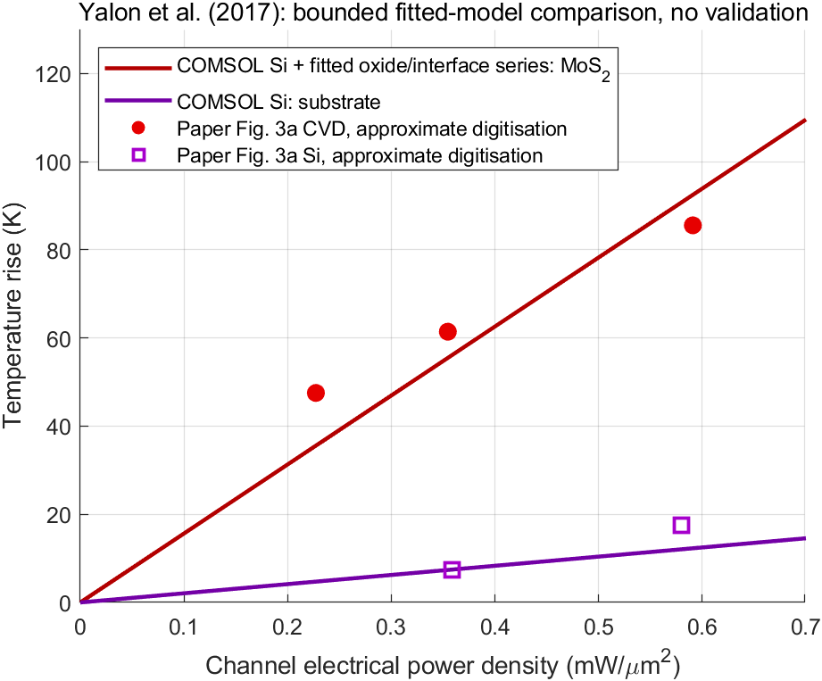
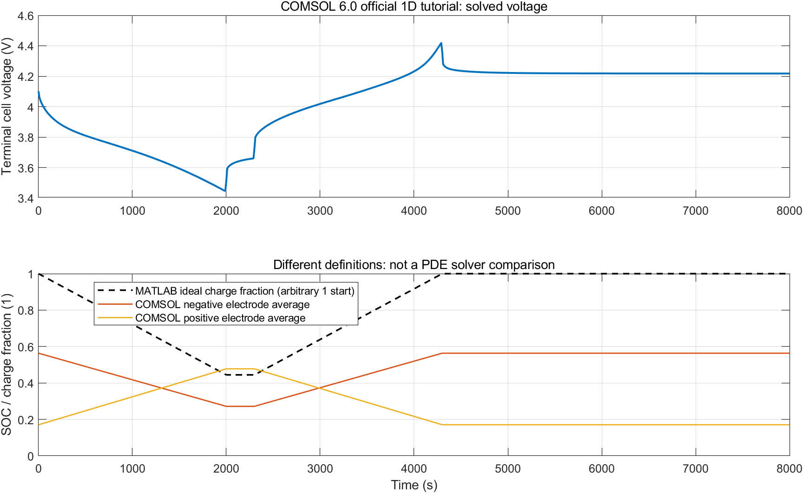
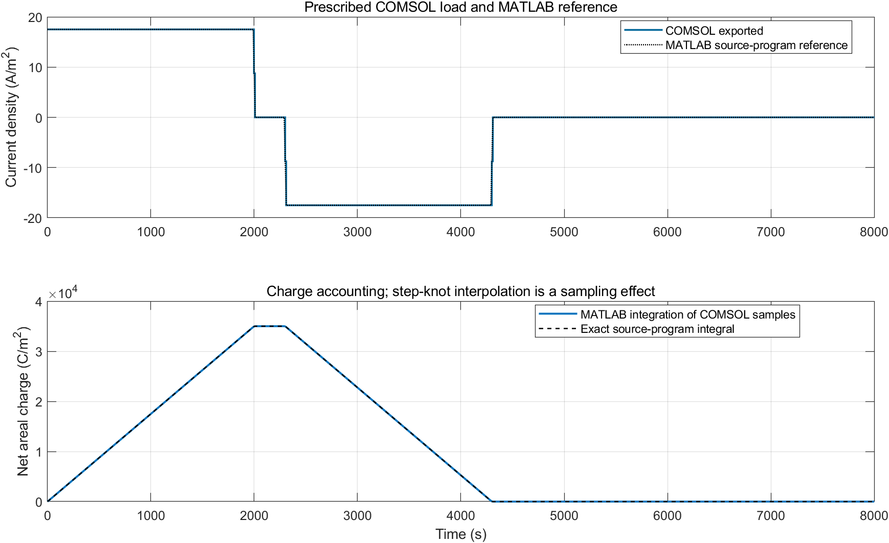

An interactive walkthrough of the actual Studio workflow: choose a reference case, inspect the parameter evidence, run a bounded calculation, and read the saved solver results with their limits attached.
The MPH was reopened in a fresh COMSOL 6.0 process; the solved field and source power matched the run record.
The film and oxide are not solved as 3D fields. The publication also informed fitting; this comparison is not independent experimental validation.
LITHIUM-ION / ELECTROCHEMICALCOMSOL 6.0 official 1D tutorial
Carbon negative 100 µm
Separator 52 µm
LiMn₂O₄ positive 174 µm
Build source model. Lithium-ion Battery interface couples charge conduction, species transport, particle diffusion and electrode kinetics.
Apply current. 17.5 A/m² discharge 0–2000 s; rest 2000–2300 s; reverse current 2300–4300 s; rest to 8000 s.
Solve and export. The saved COMSOL solution has 801 time points, terminal voltage and electrode-average charge states.
Check in MATLAB. Independently integrate prescribed current and verify 35,000 C/m² discharge and zero net external charge over the cycle.
Open actual tutorial model settings
Physics and study
COMSOL liion: solid/electrolyte charge, electrolyte transport, particle diffusion and Butler–Volmer kinetics; std1 initialisation then time-dependent solve.
Initial and boundary conditions
298 K; initial electrolyte Li concentration 2000 mol/m³; grounded negative collector, prescribed positive-collector current, internal continuity and insulated exterior material flux.
Electrode inputs
Negative/positive particle diffusion 3.9 × 10⁻¹⁴ / 1 × 10⁻¹³ m²/s; initial solid concentration 14870 / 3900 mol/m³. These belong to the official tutorial.
Saved outputs
801 samples at 10 s: terminal voltage, applied current and two electrode-average SOC traces. MATLAB solves dq/dt = iapp(t), not the electrochemical PDE.
MATLAB charge fraction and COMSOL electrode-average SOC have different definitions. The browser slider does not re-solve battery voltage.
COMSOL MODEL DEFINEDMESH AND STUDY SOLVEDMPH REOPEN VERIFIEDMATLAB POSTPROCESSINGFIGURES AND REPORT
This is the archived execution sequence, not a live solver-status feed. No screenshot of an in-progress COMSOL solve was retained; the saved model, numerical exports, hashes and completed figures are the verifiable artifacts.
COMSOL V7: complete silicon-temperature section from the verified field.

MATLAB V7: model response beside five approximate published-figure readings; fitted inputs preclude independent validation.

COMSOL battery tutorial: solved terminal voltage and distinct charge-state definitions.

MATLAB charge accounting: current schedule and integrated areal charge.
04 — MOVE THE REAL SOLVED FIELD
Rotate the COMSOL temperature field
Drag to rotate, scroll to zoom, and select a saved section. These are display views of one verified V7 COMSOL solution; choosing a section does not rerun physics.
Loading verified field…
Source
COMSOL V7 saved VTU
Field
Silicon temperature, K
Range
293.15–305.509 K
The full private VTU/MPH stays off this site. The viewer uses a derived geometry-and-temperature display extract, hash-linked to the archived source. No unpublished experimental or C2DB records are included.
The public tour above mirrors the decision sequence. The full local application handles licensed software and private files on the research workstation.
01
Source evidence
Inspect method-labelled C2DB/Materials Project information. A source record alone supplies no thermal or battery transport coefficients.
02
Parameter gate
Select a versioned reference and review geometry, boundary assumptions, sources and missing specimen-specific inputs.
03
Controlled execution
The battery tutorial is newly solved by COMSOL and analysed in MATLAB. The MoS₂ V5 case verifies and reuses a saved MPH, then runs MATLAB analysis.
04
Auditable output
Read the manifest, numerical figures, original result files and claim-status report. An LG M50 production run remains blocked.